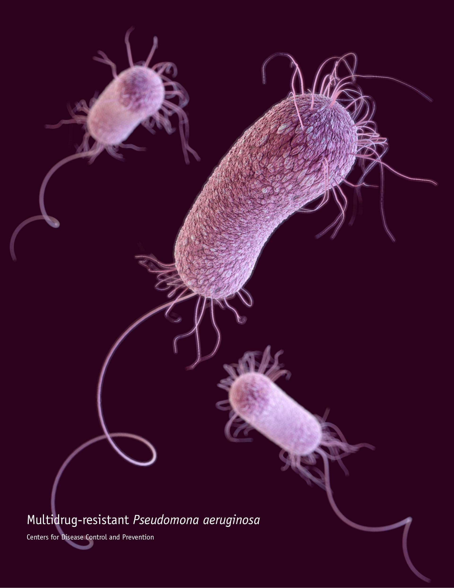
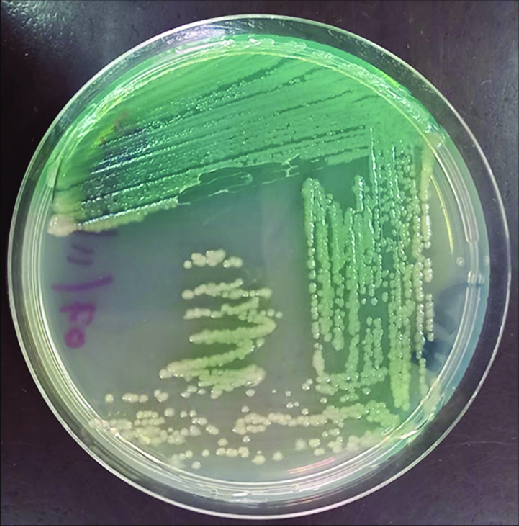

My Story
My great, great, great grandmother was first found by Carle Gessard in 1882. He was a French military physician who was
studying the blue-green pus he saw in soldiers on the battlefield.
I'm quite popular around the hospital I work in and you can find me usually within post-surgical wounds as a member of
the NI/HAI team.
I've also been found in a pathogenic form on Phaseolus vulgaris, or the common bean, in Kenya since 2019. I'm also in
eyedrops manufactured by EzriCare and Delsam Pharma in 2022 and 2023.
People have tried getting rid of me using carbapenems, polymyxins, and tigecycline, but I've been starting to develop
resistance to these antiobiotics as well. I can be removed from wounds with acetic acids with concentrations of
0.5%-5%.
Microscopically, I am Gram-negative, rod-shaped, and respirate aerobically, but I can also do so anaerobically if need be.
I move using flagellum, usually with a singular flagella, but I can also have 2-3. I also have pili that can attach onto
different surfaces. My low-permeability cellular envelope has lipopolysaccharides in the outer membrane that is actually
less toxic than other Gram-negative rod-shaped bacteria.
My colonies appear in a range of colors, from blue-green to yellow to red to brown. They're usually large and round with
irregular margins but a flat surface. My colonies may also have a shiny surface due to the biofilm I produce, see
my projects!